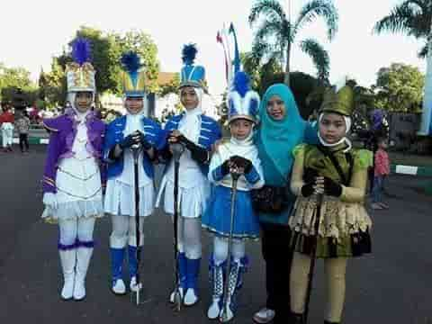

Aku sangat mengabadikan moment dimana saat aku tampil di depan umum. Karena, bagi aku moment tersebut tidak dapat
di putar kembali.
Berikut moment yang pernah aku raih yaitu :
1. MC Pada Saat Perpisahan TK tahun 2011.
2. Juara lomba Fashion Show pada saat Sekolah Dasar.
3.

Mayoret saat lomba Marching Band di Sekolah Dasar.
4. Juara lomba kultum tingkat SMA se-Kota dan Kabupaten Bima.
5. Juara lomba olimpiade pada saat SMA.
6. Ketua PMR pada saat SMA.
7. Juara umum ke-2 pada saat perpisahan SMA.Lanjut Kembali ke Halaman Utama